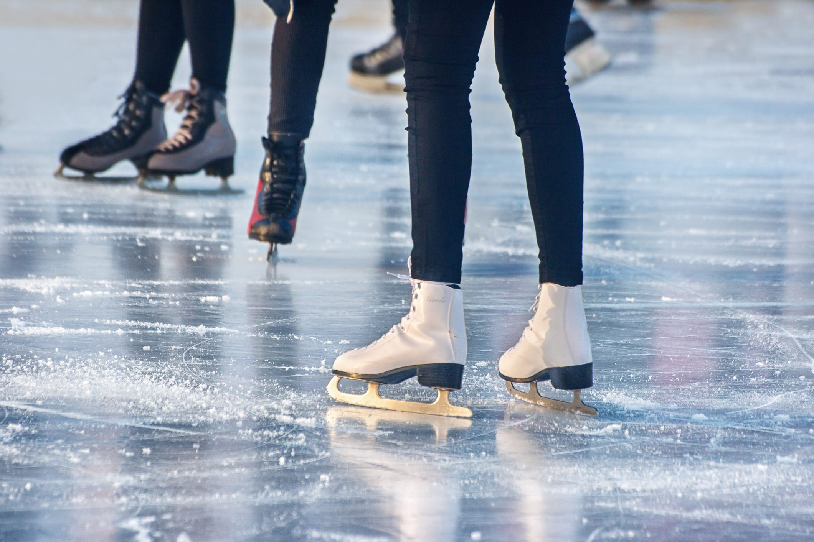
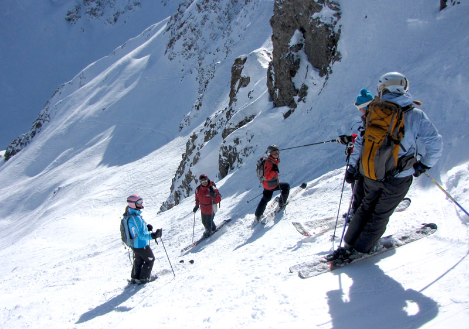
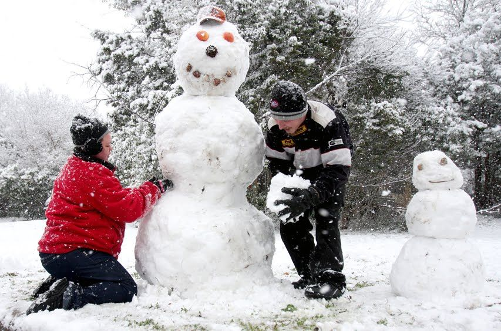
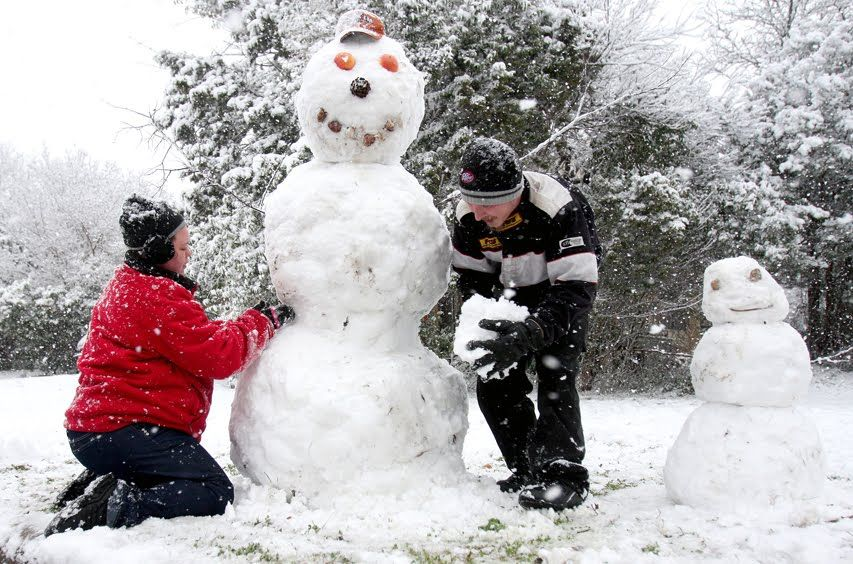
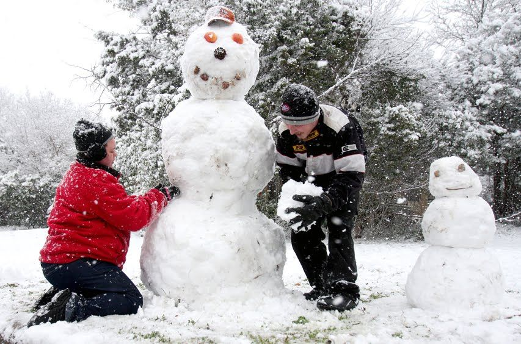

Sports
Here are some great ice sports to play during the winter
Ice Skating
Skiing
Snowboarding
Snowman Building
Snowball Fight
Ice Hockey
Dog Sledding
 
 

Winter is the coldest season of the year in polar and temperate zones; it does not occur in most of the tropical zone. It occurs after autumn and before spring in each year. Winter is caused by the axis of the Earth in that hemisphere being oriented away from the Sun. Different cultures define different dates as the start of winter, and some use a definition based on weather. When it is winter in the Northern Hemisphere, it is summer in the Southern Hemisphere, and vice versa. In many regions, winter is associated with snow and freezing temperatures.
In the Southern Hemisphere, the more maritime climate and the relative lack of land south of 40°S makes
the winters milder; thus, snow and ice are less common in inhabited regions of the Southern Hemisphere.
However, the northern hemisphere receives less sunlight when it is tilted away from the sun and thus experiences the cold of winter. In fact, all of the coldest countries in the world are located in the Northern Hemisphere.
Winter clothes are especially outerwear like coats, jackets, hats, scarves and gloves or mittens, but also warm underwear like long underwear, union suits and socks. Wool is the best natural fiber for cold weather. We wear woollen clothes in winter because air is a poor conductor of heat and woollen clothes do not allow the transfer of body heat to the environment and keep us warm. The wool is structured so there is air trapped inside. Wool insulates better (even when wet) and is naturally odor resistant.
Sweaters, sweatshirts, fleece; these will all work as the middle layer. It should be snug but not tight. Down coats also make a great middle layer in the coldest temperatures. Outer — This layer is less about keeping you warm and more about blocking the wind and rain.
We usually eat food that generate heat in our body. Eating nuts like cashews and almonds are a great snack. Pears, pomegranates, oranges, bananas and citrus fruits are great to eat between meals. hot meals take longer to eat, and this too aids digestion, slowing down the speed at which you're eating, and giving your body more time and less work to do to break down the food and absorb the nutrients
Here are some great ice sports to play during the winter
